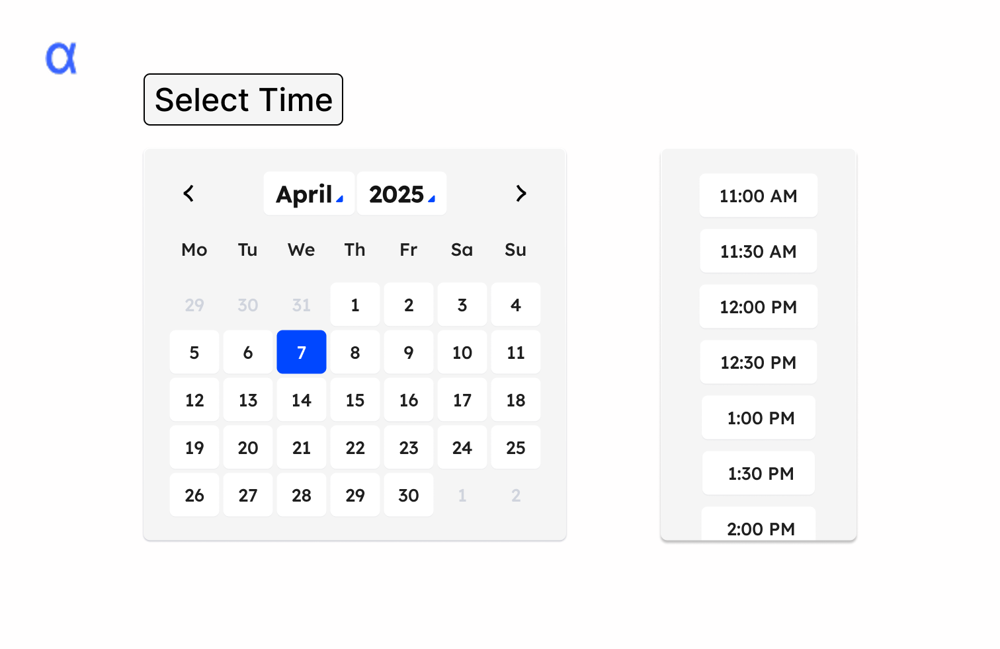
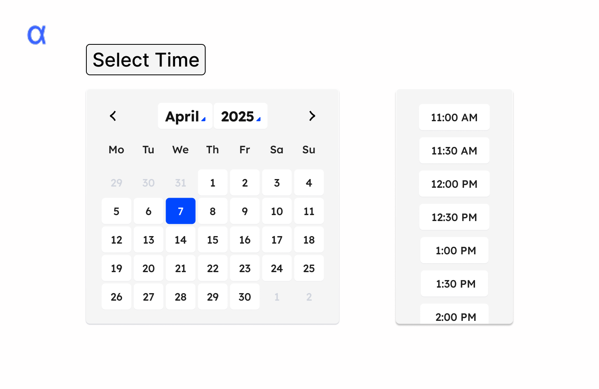

Apriora
My Role
I served as the UI/UX designer, shaping Apriora’s interface from scratch through a full iterative process—sketching, prototyping, and user testing. As a product designer in general with a passion for creations that blend community, I focused on translating a complex AI concept into a welcoming, usable tool for both recruiters and candidates.
The Problem
Apriora, an AI interview startup, aimed to simplify hiring by automating behavioral and technical interviews. The challenge: design an interface that builds trust in AI while reducing recruiter workload and improving candidate experience.
Design Process
We tackled the redesign in four key phases:
Sketching: Hand-drawn wireframes to brainstorm interaction flows.
Lo-fi Prototypes: Grayscale mockups with peer critique to refine layout.
Hi-fi Prototypes: Visual designs with real content for usability testing.
User Testing: Guided tasks to collect actionable insights.
We balanced simplicity with transparency, debating how much control recruiters should have without undermining automation. Based on critique and testing, we made key design decisions:
- Added recruiter-side views to show hiring flow
- Enabled brand customization (logo, colors, AI name)
- Unified iconography and colors for consistency
- Incorporated modern UX details: hovers, toggles, scroll flows
Testing & Impact
We validated the final prototype through a scenario task—creating and sending an interview, then checking dashboard metrics. Users narrated their thoughts, surfacing usability wins and friction points.
Key findings:
- Tasks were completed successfully, but some guidance text was missed
- Confusion between interview send-off and calendar scheduling
- Label improvements (e.g., "Role" → "Candidate Role") clarified flow
- Chunking instructions and adding tooltips improved usability
- Smart visual cues boosted user confidence and comprehension
The result: a smoother, more trustworthy interface that supports recruiters while reassuring candidates. Our choices built empathy into the tech, reinforcing Apriora’s mission.


 


Learnings
This project reinforced the power of iterative, human-centered design. We learned that even in an AI-driven product, clarity, tone, and small visual details shape trust. Empathy must guide every step—from structure to microcopy.
Ultimately, the redesign delivered efficiency without losing warmth. It proved that thoughtful design can bridge people and emerging technologies—blending tech, strategy, and community in one cohesive experience.